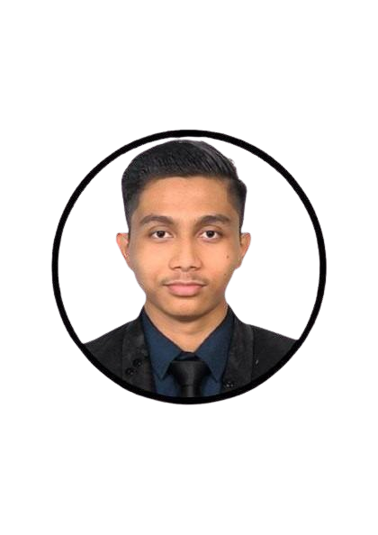

About Me

Hello, my name is MUHAMMAD SYABIL SYAHMI BIN MASDI and I am 20 years old. Kuantan, Pahang,
is where I was born and lived. Previously, I studied in Diploma in Accounting at University Of Malaya, Selangor.
I continue my studied of Bachelor of Business And Administration
(Hons) Marketing degree at the University of Technology MARA Kota Bharu in Kelantan. After that, I decided
to continue doing a Master Business Administration at Universiti Kebangsaan Malaysia, Bangi, Selangor
I am the eldest child in my family, it my biggest responsibilities to take care of my family as the elder child and I have one brother who is still in middle school. My father
works as a technician, while my mother is an accounting assistant. In spare time, i will do a little business
such as selling some food at the beach and i also reading book, newspaper and history to gain an extra knowledge. I also playing instrument to release tention and stress.
Syabil Syahmi
" Work Smart not Work Hard "